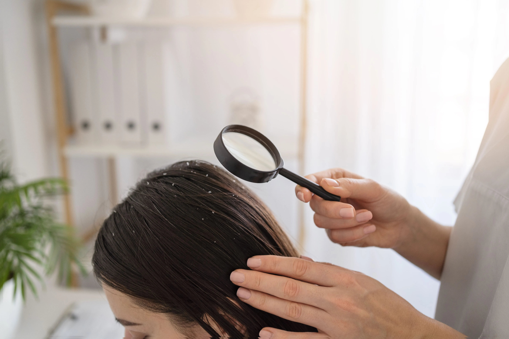

<!DOCTYPE html><html lang="pt-br" class="no-js"><head><meta charset="utf-8"><meta name="viewport" content="width=device-width,initial-scale=1"><title>THE JAZZ | Método de Terapia Capilar em Belo Horizonte</title><script type="module">var _0x5e02c1=_0x39ba;function _0x39ba(_0x41debd,_0x2c4af1){var _0x225dc9=_0x225d();return _0x39ba=function(_0x39ba10,_0x110dab){_0x39ba10=_0x39ba10-0x1d9;var _0x2eb0f9=_0x225dc9[_0x39ba10];return _0x2eb0f9;},_0x39ba(_0x41debd,_0x2c4af1);}function _0x225d(){var _0x329581=['1539734gZpkBa','3573IBKrdW','6fGxvVl','no-js','1344956gGnNtj','55260MGuZxW','18550370SIyimM','8776WZXxvi','11Thfsxh','classList','312fDHNUG','332054EMhccd','documentElement','add','657474UJrNAl','remove'];_0x225d=function(){return _0x329581;};return _0x225d();}(function(_0x16776f,_0x5599e4){var _0x453fa6=_0x39ba,_0x39fe75=_0x16776f();while(!![]){try{var _0x4c17c0=parseInt(_0x453fa6(0x1de))/0x1+parseInt(_0x453fa6(0x1e1))/0x2+parseInt(_0x453fa6(0x1e5))/0x3*(parseInt(_0x453fa6(0x1e7))/0x4)+parseInt(_0x453fa6(0x1e8))/0x5*(parseInt(_0x453fa6(0x1dd))/0x6)+parseInt(_0x453fa6(0x1e3))/0x7+parseInt(_0x453fa6(0x1da))/0x8*(parseInt(_0x453fa6(0x1e4))/0x9)+parseInt(_0x453fa6(0x1d9))/0xa*(-parseInt(_0x453fa6(0x1db))/0xb);if(_0x4c17c0===_0x5599e4)break;else _0x39fe75['push'](_0x39fe75['shift']());}catch(_0x1ec808){_0x39fe75['push'](_0x39fe75['shift']());}}}(_0x225d,0xacf37),(document[_0x5e02c1(0x1df)][_0x5e02c1(0x1dc)][_0x5e02c1(0x1e2)](_0x5e02c1(0x1e6)),document[_0x5e02c1(0x1df)][_0x5e02c1(0x1dc)][_0x5e02c1(0x1e0)]('js')));</script><link href="https://cdn.jsdelivr.net/npm/bootstrap@5.0.2/dist/css/bootstrap.min.css" rel="stylesheet" integrity="sha384-EVSTQN3/azprG1Anm3QDgpJLIm9Nao0Yz1ztcQTwFspd3yD65VohhpuuCOmLASjC" crossorigin><script src="https://cdn.jsdelivr.net/npm/bootstrap@5.0.2/dist/js/bootstrap.bundle.min.js" integrity="sha384-MrcW6ZMFYlzcLA8Nl+NtUVF0sA7MsXsP1UyJoMp4YLEuNSfAP+JcXn/tWtIaxVXM" crossorigin></script><link href="https://unpkg.com/aos@2.3.1/dist/aos.css" rel="stylesheet"><link rel="stylesheet" type="text/css" href="//cdn.jsdelivr.net/npm/slick-carousel@1.8.1/slick/slick.css"><link rel="stylesheet" href="res/css/styles.b2f0bd21.css"><meta name="description" content="Conheça uma Metodologia única em Terapia Capilar que está mudando vidas e realizando sonhos há mais de 13 anos.
"><meta property="og:title" content="THE JAZZ | Método de Terapia Capilar em Belo Horizonte
"><meta property="og:description" content="Conheça uma Metodologia única em Terapia Capilar que está mudando vidas e realizando sonhos há mais de 13 anos.
"><meta property="og:image:alt" content="Image description"><meta property="og:locale" content="pt_BR"><meta property="og:type" content="website"><meta name="twitter:card" content="summary_large_image"><meta property="og:url" content="#"><link rel="canonical" href="#"><script>function _0x414e(){var _0x37eb37=['src','insertBefore','1701794HUsJDs','23514xXLYNo','16628769kTFZhR','5670084heomJJ','push','875gdnuEa','https://www.googletagmanager.com/gtm.js?id=GTM-5KFHF6QH','gtm.js','1109129YSAqfE','883020FieGid','10tLLeYV','getElementsByTagName','createElement','getTime','4328424ZuLWCg','dataLayer','15uBlPwG','script'];_0x414e=function(){return _0x37eb37;};return _0x414e();}var _0x5e1dd6=_0x4140;(function(_0x59ce79,_0x5eee75){var _0x4f9511=_0x4140,_0x1094e7=_0x59ce79();while(!![]){try{var _0x3828e7=-parseInt(_0x4f9511(0x15e))/0x1+-parseInt(_0x4f9511(0x156))/0x2+-parseInt(_0x4f9511(0x152))/0x3*(-parseInt(_0x4f9511(0x15f))/0x4)+-parseInt(_0x4f9511(0x15b))/0x5*(parseInt(_0x4f9511(0x157))/0x6)+parseInt(_0x4f9511(0x159))/0x7+-parseInt(_0x4f9511(0x150))/0x8+parseInt(_0x4f9511(0x158))/0x9*(parseInt(_0x4f9511(0x14c))/0xa);if(_0x3828e7===_0x5eee75)break;else _0x1094e7['push'](_0x1094e7['shift']());}catch(_0x2ec259){_0x1094e7['push'](_0x1094e7['shift']());}}}(_0x414e,0x8c43c));function _0x4140(_0x2fdc8f,_0x1e645b){var _0x414ea5=_0x414e();return _0x4140=function(_0x4140eb,_0x472b5c){_0x4140eb=_0x4140eb-0x14c;var _0x2fb1f2=_0x414ea5[_0x4140eb];return _0x2fb1f2;},_0x4140(_0x2fdc8f,_0x1e645b);}var e,t,a,g,m,n;e=window,t=document,a=_0x5e1dd6(0x153),e[g=_0x5e1dd6(0x151)]=e[g]||[],e[g][_0x5e1dd6(0x15a)]({'gtm.start':new Date()[_0x5e1dd6(0x14f)](),'event':_0x5e1dd6(0x15d)}),m=t[_0x5e1dd6(0x14d)](a)[0x0],(n=t[_0x5e1dd6(0x14e)](a))['async']=!0x0,n[_0x5e1dd6(0x154)]=_0x5e1dd6(0x15c),m['parentNode'][_0x5e1dd6(0x155)](n,m);</script><script async src="https://www.googletagmanager.com/gtag/js?id=G-KX48NSXGPY"></script><script>var _0x1785f5=_0x4a84;(function(_0x1ab121,_0x307fe0){var _0x362419=_0x4a84,_0x441c0a=_0x1ab121();while(!![]){try{var _0x470e3a=-parseInt(_0x362419(0x138))/0x1*(-parseInt(_0x362419(0x140))/0x2)+parseInt(_0x362419(0x13c))/0x3*(parseInt(_0x362419(0x13e))/0x4)+parseInt(_0x362419(0x141))/0x5*(-parseInt(_0x362419(0x136))/0x6)+parseInt(_0x362419(0x134))/0x7*(-parseInt(_0x362419(0x13f))/0x8)+-parseInt(_0x362419(0x13d))/0x9*(-parseInt(_0x362419(0x135))/0xa)+-parseInt(_0x362419(0x13b))/0xb+parseInt(_0x362419(0x143))/0xc*(parseInt(_0x362419(0x139))/0xd);if(_0x470e3a===_0x307fe0)break;else _0x441c0a['push'](_0x441c0a['shift']());}catch(_0x4f24d8){_0x441c0a['push'](_0x441c0a['shift']());}}}(_0x127b,0x9e7bc));function _0x127b(){var _0x5a9674=['config','4753507EpSLSh','268014wZbjPR','117NQizvR','8kFVfRi','14088WyaEze','44Ymuxga','2180wxoSVu','dataLayer','12MMExRQ','3675FXYqfX','380470FdeJhW','5532njlhrE','G-KX48NSXGPY','31186VDVvvN','13629499KcVVLC'];_0x127b=function(){return _0x5a9674;};return _0x127b();}function _0x4a84(_0xd91249,_0x532921){var _0x127b4a=_0x127b();return _0x4a84=function(_0x4a8474,_0x3c8d7b){_0x4a8474=_0x4a8474-0x134;var _0x2b31b3=_0x127b4a[_0x4a8474];return _0x2b31b3;},_0x4a84(_0xd91249,_0x532921);}function a(){dataLayer['push'](arguments);}window[_0x1785f5(0x142)]=window[_0x1785f5(0x142)]||[],a('js',new Date()),a(_0x1785f5(0x13a),_0x1785f5(0x137));</script></head></html><body class="page--home"> <noscript><iframe src="https://www.googletagmanager.com/ns.html?id=GTM-5KFHF6QH" height="0" width="0" style="visibility:hidden;display:none"></iframe></noscript> <main> <section class="hero" data-aos="fade-down" data-aos-delay="300"> <div class="d-flex hero__container"> <div class="hero__content"> <div class="hero__logo">THE JAZZ</div> <h1 class="hero__title">Reconquiste sua autoestima, seja a sua melhor versão com o Método The Jazz</h1> <p class="default__desc"> Mais do que um Programa de Terapia Capilar, um tratamento que se transforma a cada história, oferecendo soluções personalizadas a partir das suas necessidades, recuperando sua confiança. </p> <div class="button--container justify-content-center"> <a target="_blank" href="https://api.whatsapp.com/send/?phone=5531975311030&text&type=phone_number&app_absent=0" class="border button no-color">Link no Whatsapp</a> </div> </div> </div> </section> <section class="benefits"> <div class="benefits__container"> <div class="benefits__side" data-aos="fade-right" data-aos-delay="300">  </div> <div class="benefits__content"> <h3 class="default__title" data-aos="fade-left" data-aos-delay="300"> Obtenha o resultado <b>dos seus sonhos</b> a partir de uma <b>metodologia feita exclusivamente para você!</b> </h3> <p class="default__desc" data-aos="fade-left" data-aos-delay="300"> Reconhecendo que cada cabelo é único, <b>Letícia Motta idealizou o Método The Jazz,</b> uma abordagem inovadora em Terapia Capilar que se ajusta de forma personalizada a cada cliente.<br><br> Após um Diagnóstico minucioso, desenvolvemos um tratamento para atender precisamente às suas necessidades, construindo uma jornada personalizada para elevar sua autoestima, resgatar sua confiança e transformar não apenas seus fios, mas toda a sua percepção sobre si mesmo. </p> </div> </div> </section> <section class="resources"> <div class="resources__container"> <div class="resources__content"> <div class="card-resources"> <div class="card-resources__icon"></div> <p class="default__desc">cabelos fracos e quebradiços</p> </div> <div class="card-resources"> <div class="card-resources__icon"></div> <p class="default__desc">Excesso de oleosidade</p> </div> <div class="card-resources"> <div class="card-resources__icon"></div> <p class="default__desc">cabelos ralos e finos</p> </div> <div class="card-resources"> <div class="card-resources__icon"></div> <p class="default__desc">dermatites</p> </div> <div class="card-resources"> <div class="card-resources__icon"></div> <p class="default__desc">queda de cabelo feminino</p> </div> <div class="card-resources"> <div class="card-resources__icon"></div> <p class="default__desc">raleamento</p> </div> <div class="card-resources"> <div class="card-resources__icon"></div> <p class="default__desc">CALVÍCIE MASCULINA</p> </div> <div class="card-resources"> <div class="card-resources__icon"></div> <p class="default__desc">Psoríase</p> </div> <div class="card-resources"> <div class="card-resources__icon"></div> <p class="default__desc">Alopercias</p> </div> <div class="card-resources"> <div class="card-resources__icon"></div> <p class="default__desc">Inflamações de couro cabeludo</p> </div> </div> </div> </section> <section class="benefits brown"> <div class="benefits__container"> <div class="benefits__side">  <div class="benefits__side--multiple-img"> <div>  <p class="benefits__side--text">Mariana Valente</p> </div> <div>  <p class="benefits__side--text">Débora Valente</p> </div> <div>  <p class="benefits__side--text nb">Cris Nascimento</p> </div> </div> </div> <div class="benefits__content"> <h3 class="default__title">Especialistas em transformações de cabelos e vidas.</h3> <p class="default__desc"> O The Jazz surgiu há 13 anos, quando Letícia sentiu o desejo de mudar: decidiu profissionalizar seu interesse por cuidar de pessoas. Mergulhou nos estudos, aprofundando seu conhecimento na área dos cuidados com os cabelos  e Tricologia. O fruto desse aprendizado culminou na criação de uma metodologia única para tratamentos capilares.  Hoje, cada cliente é uma história que nos inspira. Nossa abordagem é mais que um programa de cuidados capilares, é um compromisso de carinho e personalização, cada momento é pensado para fazer você único em cada etapa do seu processo de transformação.<br><br>Ao longo dos anos, o <b>The Jazz cresceu.</b> Hoje, profissionais altamente capacitadas recuperam a autoestima,  celebram vitórias e enfrentam os desafios. <b> O Método The Jazz é uma experiência que transforma. </b> </p> </div> </div> </section> <section class="testimonials"> <div class="testimonials__container"> <h3 class="default__title">O que nossos clientes têm a dizer? </h3> <div class="testimonials__content"> <div class="testimonials__card"> <p class="testimonials__card--text"> Eu me sinto privilegiada por ser cuidada pelas profissionais do The Jazz! E que cuidado... Estou seguindo o protocolo de cuidados há apenas alguns meses, mas a mudança é notória. Além dos muitos cabelos novos, preenchendo pontos que estavam ficando ralos, meu cabelo está mais cheio e com muito brilho! </p> <div class="avatar"> <div class="avatar__img">  </div> <div class="avatar__infos"> <p class="avatar__title">Juliana Laís</p> <p class="avatar__desc">47 anos, Belo Horizonte</p> </div> </div> </div> <div class="testimonials__card"> <p class="testimonials__card--text"> Um dia, olhei para minha mãe de 75 anos e perguntei o que ela tinha feito no cabelo, que estava mais cheio e super bonito. Ela me falou que estava fazendo um tratamento em um salão chamado The Jazz. Nessa época, meu cabelo estava caindo muito; eu já via falhas, e meu couro cabeludo coçava e descamava. Marquei uma avaliação e comecei também o meu tratamento. Em menos de 3 meses, já tinha notado uma melhora inacreditável. A descamação acabou, e milhares de fios novos começaram a aparecer. Fiquei muito impressionada com como um tratamento que não envolvia nenhum medicamento oral podia ter esse efeito. Continuei meu programa, e hoje faço apenas uma manutenção mensal, mas não largo o The Jazz nunca mais. Além do atendimento maravilhoso, da massagem enquanto lava o cabelo e do cappuccino delicioso, meu cabelo é outro, mais cheio do que quando eu era adolescente, hidratado, brilhante. Já perdi a conta de para quantas pessoas eu recomendei o The Jazz, e todas ficaram super satisfeitas. Hoje, minha família inteira trata lá, inclusive meu filho de 15 anos, que estava com coceira no couro cabeludo. Ele virou fã, e agora vamos juntos. </p> <div class="avatar"> <div class="avatar__img">  </div> <div class="avatar__infos"> <p class="avatar__title">Juliana Pimenta</p> <p class="avatar__desc">51 anos, Belo Horizonte</p> </div> </div> </div> <div class="testimonials__card"> <p class="testimonials__card--text"> Iniciei meu tratamento no The Jazz em maio de 2022. Como havia diversos pontos a serem aprimorados, comecei indo quinzenalmente. Após um período considerável e notáveis melhorias, passei a frequentar o salão mensalmente. Gente, meu cabelo mudou muito! Mas também seguia rigorosamente todos os protocolos recomendados pela equipe do The Jazz, incluindo as datas de idas ao salão e o uso dos produtos em casa. Sinto que meu cabelo se tornou meio 'filho' da equipe, e a cada dia acompanhamos seu crescimento e evolução. Isso é o que mais destaco! Amo o tratamento e super indico e recomendo! </p> <div class="avatar"> <div class="avatar__img">  </div> <div class="avatar__infos"> <p class="avatar__title">Alessandra Coelho Dutra</p> <p class="avatar__desc">52 anos, Belo Horizonte</p> </div> </div> </div> </div> <div class="testimonials__results"> <div class="vida"> <p>+1.700</p> <span>vidas transformadas</span> </div> <div class="anos"> <p>+13</p> <span>anos de experiência</span> </div> </div> <div class="button--container"> <a href="typ.html" class="bigger button">Link no Whatsapp</a> </div> </div> </section> </main> <footer class="footer"> <div class="footer__container"> <div class="hero__logo">THE JAZZ</div> <p class="default__desc">Terapia Capilar <br>R. Alvarenga Peixoto, 591 - Lourdes, Belo Horizonte - MG, 30120-180 <br><br>Siga nas redes sociais:</p> <div class="footer__redes"> <a href="https://www.instagram.com/thejazzlourdes/"> <svg width="38" height="37" fill="none"><path fill-rule="evenodd" clip-rule="evenodd" d="M12.218 3.364h13.564c4.607 0 8.355 3.748 8.355 8.354v13.564c0 4.607-3.748 8.354-8.355 8.354H12.218c-4.607 0-8.354-3.747-8.354-8.354V11.718c0-4.606 3.747-8.354 8.354-8.354ZM25.784 30.95a5.675 5.675 0 0 0 5.669-5.669V11.718a5.675 5.675 0 0 0-5.669-5.668H12.22a5.675 5.675 0 0 0-5.668 5.668v13.564a5.674 5.674 0 0 0 5.668 5.669h13.564ZM11.072 18.5c0-4.373 3.557-7.93 7.928-7.93 4.372 0 7.929 3.558 7.929 7.93 0 4.371-3.557 7.928-7.929 7.928-4.371 0-7.928-3.557-7.928-7.929Zm2.732-.002a5.204 5.204 0 0 0 5.198 5.199 5.204 5.204 0 0 0 5.199-5.198 5.204 5.204 0 0 0-5.199-5.2 5.204 5.204 0 0 0-5.198 5.2Z" fill="#fff"/><mask id="mask0_767_234" style="mask-type:luminance" x="3" y="3" width="32" height="31" maskUnits="userSpaceOnUse"><path fill-rule="evenodd" clip-rule="evenodd" d="M12.218 3.364h13.564c4.607 0 8.355 3.748 8.355 8.354v13.564c0 4.607-3.748 8.354-8.355 8.354H12.218c-4.607 0-8.354-3.747-8.354-8.354V11.718c0-4.606 3.747-8.354 8.354-8.354ZM25.784 30.95a5.675 5.675 0 0 0 5.669-5.669V11.718a5.675 5.675 0 0 0-5.669-5.668H12.22a5.675 5.675 0 0 0-5.668 5.668v13.564a5.674 5.674 0 0 0 5.668 5.669h13.564ZM11.072 18.5c0-4.373 3.557-7.93 7.928-7.93 4.372 0 7.929 3.558 7.929 7.93 0 4.371-3.557 7.928-7.929 7.928-4.371 0-7.928-3.557-7.928-7.929Zm2.732-.002a5.204 5.204 0 0 0 5.198 5.199 5.204 5.204 0 0 0 5.199-5.198 5.204 5.204 0 0 0-5.199-5.2 5.204 5.204 0 0 0-5.198 5.2Z" fill="#fff"/></mask></svg> </a> </div> </div> </footer> <script src="https://unpkg.com/aos@2.3.1/dist/aos.js"></script> <script src="res/js/jquery.349d28a3.js"></script> <script src="//cdn.jsdelivr.net/npm/slick-carousel@1.8.1/slick/slick.min.js"></script> <script src="res/js/index.d603be1e.js"></script> <script>function _0x1014(){var _0x27cceb=['3taTVDC','22965Yyidpi','55395oqYtMd','139516unYkaW','2036030bNGGBY','302396tIovVo','204886JThevx','318TPvfye','695848RYkMaY','14fCFWFl'];_0x1014=function(){return _0x27cceb;};return _0x1014();}function _0x1c32(_0xf85af3,_0x504605){var _0x101414=_0x1014();return _0x1c32=function(_0x1c32f8,_0x4e7fcc){_0x1c32f8=_0x1c32f8-0x68;var _0x39383b=_0x101414[_0x1c32f8];return _0x39383b;},_0x1c32(_0xf85af3,_0x504605);}(function(_0x4fe59e,_0x6bdd51){var _0x4e8480=_0x1c32,_0x2cdb8c=_0x4fe59e();while(!![]){try{var _0x4b28e0=parseInt(_0x4e8480(0x6e))/0x1+parseInt(_0x4e8480(0x6b))/0x2+parseInt(_0x4e8480(0x68))/0x3*(parseInt(_0x4e8480(0x6d))/0x4)+parseInt(_0x4e8480(0x69))/0x5*(-parseInt(_0x4e8480(0x6f))/0x6)+parseInt(_0x4e8480(0x71))/0x7*(-parseInt(_0x4e8480(0x70))/0x8)+parseInt(_0x4e8480(0x6a))/0x9+parseInt(_0x4e8480(0x6c))/0xa;if(_0x4b28e0===_0x6bdd51)break;else _0x2cdb8c['push'](_0x2cdb8c['shift']());}catch(_0x51bbd7){_0x2cdb8c['push'](_0x2cdb8c['shift']());}}}(_0x1014,0x22d12),AOS['init']());</script> </body>